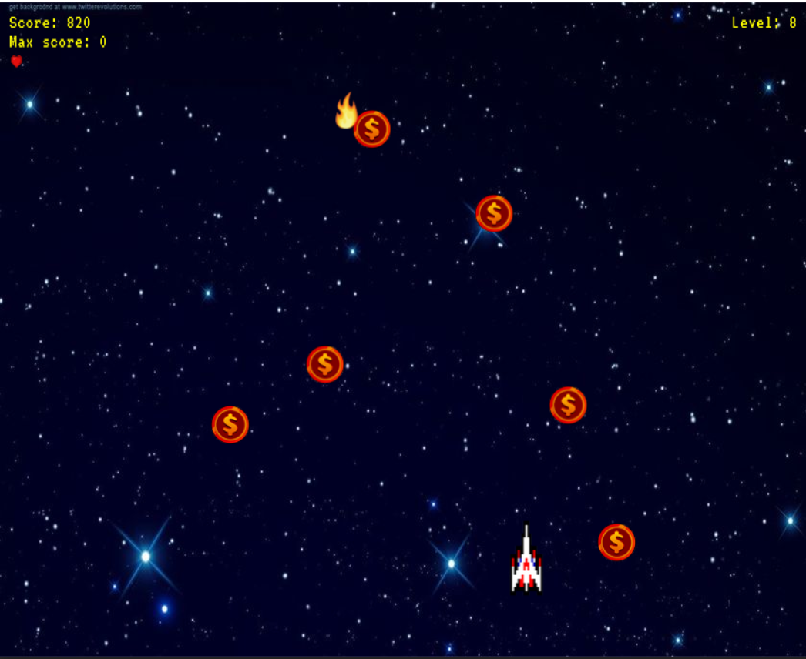

Space Treasure Hunt!Minigame
Done Using Ruby with Gosu
Done Using Ruby with Gosu
In this fun project, I've created a short space minigame in Ruby that is essentially just navigating your spaceship side-to-side, attempting to collect as many coins as possible for the purpose of competing against your friends, seeing who could reach the highest score before the player exhausts all three of their lives. The player can lose a life if he or she mistakenly stumbles upon a fiery object as the person is collecting coins. Once the player accumulates a certain amount of coins that fulfills the meter, the person will be advanced into the next level, where the speed of the falling coins (and fiery objects) will increase, making it more difficult for the player to avoid the fiery objects.
Once the player has exhausted all three of their lives, the Game Over screen will display, prompting the player if he or she wishes to play again. The current player's highest score will be displayed at the top left corner of the screen as "Max score," in which whether or not the same player or another will begin another game, the max high score received prior will remain displayed until it has been surpassed, where the new high score received will replace the older one.
While creating the game, this was done using RubyMine 2021. I've included a very appealing soundtrack that plays as the game is running, along with a UI that will immerse the player's focus into the game with a thrill of excitement.